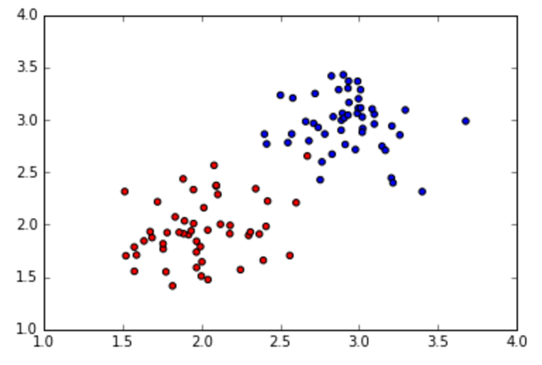
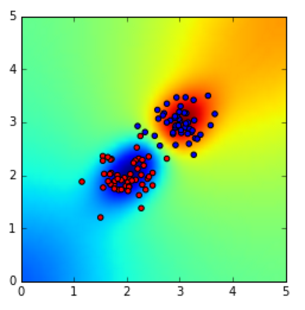
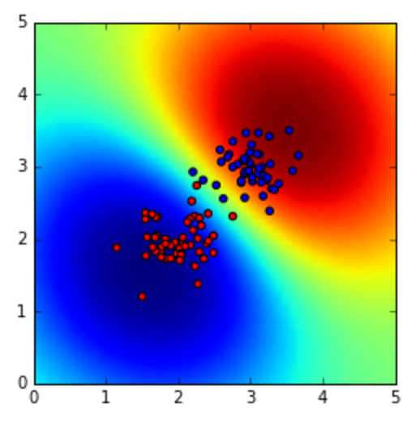
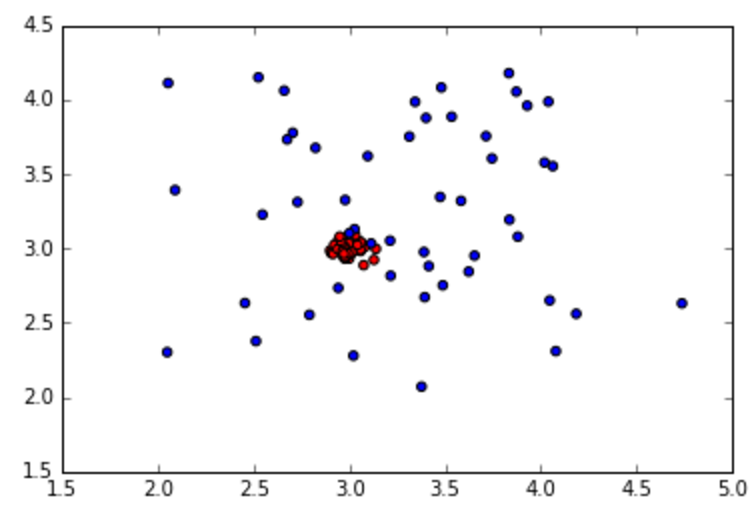
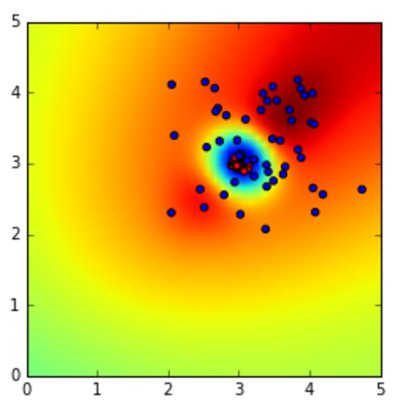
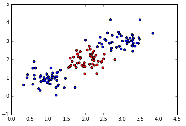
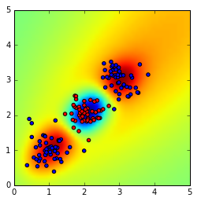
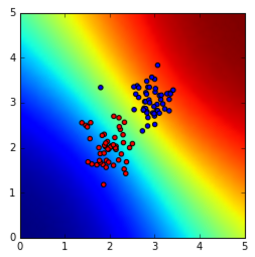
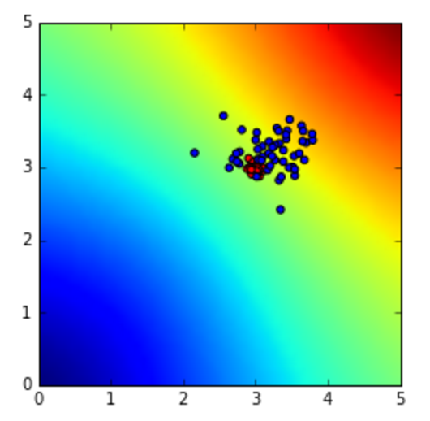

Assignment 8: Gaussian Processes for Classification
Deadline: April 7, 2017 at 1pm
Write a program in python to implement Gaussian Processes
for classification. Follow the below instructions.
- Generate two classes of data with the same population
size (N1=N2=50), sigma = 0.1, mean1 = [2,2], mean2= [3,3]:

- Write code of Gaussian Processes to classify the two
clusters.
- Use the kernel written on the textbook (page 307,
Eq.(6.63)). As for its parameters, initially you set them
(1.0, 4.0, 1.0, 2.0).
- Draw the probability map, similar to:

- Change the kernel parameters to (1.0, 0.25, 0, 0) to
obtain:

- Discuss why the new parameters generate a less precise
probability map.
- Change the kernel parameters back to (1.0, 4.0, 1.0, 2.0).
- Change the means of the clusters to mean1 = [3,3],
mean2= [3.2,3.2], and cov1 = [[0.003, 0],[0.003]], cov2=
[[0.3,0],[0,0.3]]:

- Classify and show the probability map:

- Change the means and clusters back to #1 above, and add
another cluster belonging to C2, with mean=[1,1] and
sigma=0.1, like:

- Classify and show the probability map:

- Show the probability maps of the predictive distribution on the
data described at #1 and #8 above. Similar to:


Submission
Submit both your code and results in an ipython-notebook format via Canvas by
the deadline.